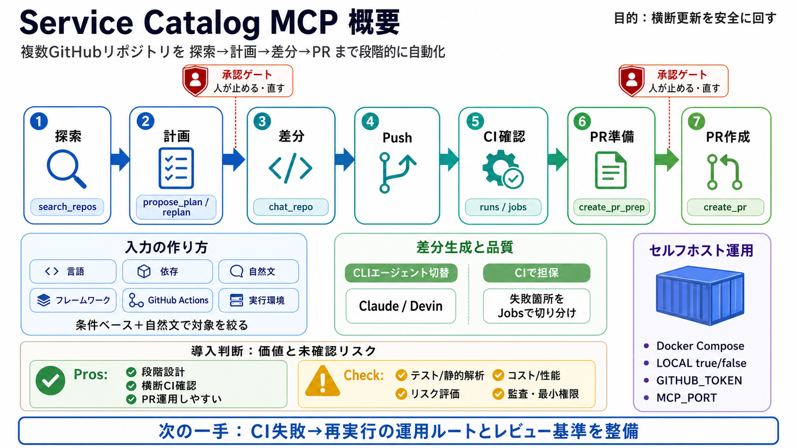

Ultimate No Code MCP Setup Guide (Self-Host, Installation ...
Skool community to go deeper with AI and connect with 750+ like minded members https://www.skool.com/ai-automation-socie…

横断バッチ変更
MCPクライアントと連携し、複数GitHubリポジトリへ「探索→計画→差分→PR」までを段階的に自動化するAIプラットフォーム。
単発では危険
単発のコード提案は再現性が弱く、対象範囲・差分・CI・PR作成を「一連のワークフロー」として管理しにくい。
探索からPRへ
Service Catalogは検索からPR作成までを、リポジトリ単位で順に進めます。
人が止める
自動化の利便性と暴走リスクを両立するため、提案内容を確認し、必要なら再計画や調整で軌道修正できる。
入力の作り方
入力は「条件ベース」か「自然文クエリ」。検索後にプランナーLLMがリポジトリごとのタスクを提案します。
差分生成の柔軟性
差分生成フェーズではCLIエージェントを切り替可能。組織の運用（得意領域・費用）に合わせて導入できます。
CIで担保
push後にGitHub Actionsの状態を収集し、失敗箇所を get_workflow_jobs で切り分けできます。
PR文面も設計
PRは作成前の下書き（create_pr_prep）を経て、最終的に create_pr で開かれます。
セルフホスト前提
LOCAL=true/falseを想定し、Docker Composeでセルフホスト可能。必要な認証情報も具体的に示されています。
実運用の道具
インデックス、リポジトリグループ管理、セッションキャンセル、PR更新/クローズ等の機能が用意されています。
価値と懸念
価値は高いが、安全性・品質・性能・セキュリティ・ガバナンスを追加で設計する必要がある。
次に確認
本番投入前に、レビュー基準（安全性）、品質担保（テスト/静的解析）、失敗リカバリ、権限と監査（秘密情報の扱い）、大規模時のコスト/性能を確認すると安心。
Skool community to go deeper with AI and connect with 750+ like minded members https://www.skool.com/ai-automation-socie…
Build and Ship Any MCP Server in MINUTES (Full Guide) Cole Medin 211000 subscribers 1656 likes 64164 views 10 Jul 2025 B…
All-in-one MCP server with AI search, RAG, and multi-service integrations (GitLab/Jira/Confluence/YouTube) for AI-enhanc…
# Self-Hosted MCP Server (Open Source) Guide. A step-by-step guide to running the MeetGeek MCP Server locally and connec…
* MCP: The Protocol Powering Agentic AI. ## A practical guide for ServiceNow professionals who want to understand what M…